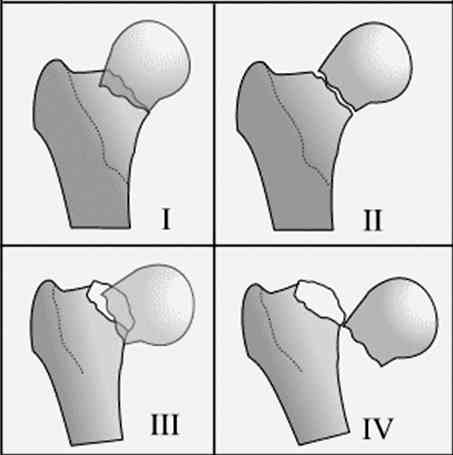
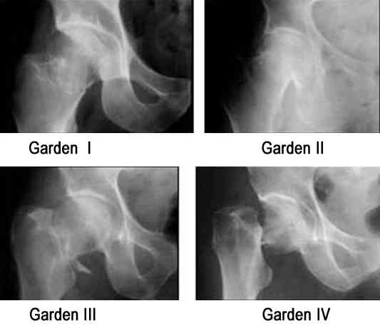

Bienvenue Sur Medical Education
Traumatismes de la hanche
Spécialité : pediatrie / traumatologie /
Points importants
-
Chez le sujet jeune, le pronostic est fonctionnel
-
Chez les personnes âgées, la prise en charge des pathologies causales prime car elles engagent le pronostic vital (IDM, AVC, Intoxication médicamenteuse)
Présentation clinique / CIMU
SIGNES FONCTIONNELS
Présentation clinique / CIMU
SIGNES FONCTIONNELS
Généraux
- Douleur intense (évaluation EVA ou EN)
- Impotence fonctionnelle
- Attitude vicieuse du membre inférieur
Spécifiques
- Fonction de la nature du traumatisme
CONTEXTE
Terrain
- Sujet âgé, de sexe féminin
- Chutes à répétition
Traitement usuel
- Psychotropes et anticoagulants
Antécédents
- Ostéoporose
Circonstances de survenue
-
Chez le sujet jeune :
- accident de la voie publique
- accident du tableau de bord
- chute d'un lieu élevé
- accident de sport.
-
Chez la personne âgée :
- chute de sa hauteur
EXAMEN CLINIQUE
Fracture du col fémoral
- Raccourcissement de la jambe de 3 à 4 cm
- Rotation externe du pied, abduction du membre
- Impotence fonctionnelle totale sauf en cas de fracture engrenée
- Douleur à la palpation du creux inguinal
Fracture trochantérienne
- Raccourcissement et rotation externe de la diaphyse fémorale
- Impotence fonctionnelle totale
- Douleur à la palpation de la face latérale de la hanche
Luxation de la tête fémorale
- Position vicieuse de la hanche, fixée
- La luxation iliaque (la plus fréquente) : tête fémorale dans la fosse iliaque, membre raccourci, en extension, adduction et rotation interne
Lésions associées fréquentes
- Fracture du cotyle, fracture de la tête fémorale, paralysie du nerf sciatique : troubles sensitivo-moteurs périphériques
- Une plaie hémorragique ou une plaie en regard du triangle de scarpa, évoque une lésion de l'artère fémorale associée
- Une plaie de la région fessière, siégeant dans le quart inféromédial, évoque une lésion du nerf sciatique associée
-
Signes de choc :
- marbrures
- tachycardie, HoTA,
- extrémités froides
- oligurie
- polypnée
- troubles de la conscience
-
Signes locaux de gravité :
- ischémie distale
- troubles sensitivo-moteurs périphériques
EXAMENS PARACLINIQUES SIMPLES
Fonction de la gravité clinique et/ou des pathologies causales associées
- ECG systématiquement (étiologie de la chute, pré-opératoire)
- Hémoglobine capillaire si signes de choc ou plaie
- Glycémie capillaire (étiologie de la chute)
- BU (étiologie = infection urinaire)
CIMU
- Tri 2 à 5 en fonction de la gravité clinique
Signes paracliniques
BIOLOGIQUES
-
Rechercher une pathologie médicale responsable de la chute
-
NFS (anémie)
-
ionogramme sanguin (désordre hydroélectrolytique)
-
réatinine, CPK (rhabdomyolyse)
-
troponine si douleur thoracique ou anomalies ECG
-
bilan infectieux en cas de fièvre
-
Prélever un bilan préopératoire si indication chirurgicale
-
Prélever un bilan prétransfusionnel en cas de plaie hémorragique siégeant sur un trajet artériel
IMAGERIE
-
Bassin de face + hanche face et profil si suspicion clinique de fracture
-
Bassin de face + ¾ obturateur et alaire si suspicion clinique de luxation du col
-
+ radiographie du fémur face et profil si le traumatisme survient sur une prothèse de hanche afin de visualiser la queue de la prothèse
-
TDM à 24-48 heures si l'examen clinique est évocateur d'une fracture et si le bilan radiologique ne montre pas de lésion (certaines fractures ne peuvent être visualisées initialement)
Diagnostic étiologique
-
Chute de sa hauteur (toutes les étiologies de chutes sont impliquées)
-
Accident Voie Publique
Diagnostic différentiel
- NFS (anémie)
- ionogramme sanguin (désordre hydroélectrolytique)
- réatinine, CPK (rhabdomyolyse)
- troponine si douleur thoracique ou anomalies ECG
- bilan infectieux en cas de fièvre
Diagnostic étiologique
- Chute de sa hauteur (toutes les étiologies de chutes sont impliquées)
- Accident Voie Publique
Diagnostic différentiel
En cas de douleur de hanche sans traumatisme identifié, penser à
- Coxopathie
- Fracture de fatigue
- Sciatique
- Ostéosarcome
- Coxite
- Pathologie musculo-tendineuse
- Pathologie d'insertion des muscles de la cuisse (quadriceps, ischio-jambiers)
Traitement
TRAITEMENT PREHOSPITALIER / INTRAHOSPITALIER
Stabilisation initiale
-
En cas de traumatisme avec EVA ou EN > 6 :
- déshabillage par découpage, respecter la position antalgique
- pose d'une voie veineuse de bon calibre
- bilan pré-opératoire
- remplissage vasculaire en fonction de l'état hémodynamique
- analgésie parentérale fonction de l’intensité douloureuse (paracétamol IV, morphiniques)
- anesthésie locorégionale (bloc iliofacial) si recommandée
- en cas de signes locaux distaux de gravité, prévenir d'emblée le chirurgien tout en continuant la stabilisation initiale
-
En cas de plaie hémorragique siégeant sur un trajet artériel :
- compression sur la plaie
- pose de deux voies veineuses de bon calibre
- remplissage vasculaire
- bilan prétransfusionnel
- prise en charge chirurgicale immédiate au bloc
Suivi du traitement
-
Fracture du col fémoral :
- c'est une urgence chirurgicale : 100% de nécrose au bout de 24h par atteinte de l'artère circonflexe
- Garden I ou II : ostéosynthèse
- Garden III ou IV : ostéosynthèse ou prothèse en fonction de l'âge et de l'état physiologique du patient
- remise en charge précoce afin de prévenir les complications du décubitus prolongé (escarres, phlébite, infection urinaire)
- en cas d'intervention retardée : traitement orthopédique par traction collée
- si l'état clinique ne peut supporter un traitement chirurgical : soins de nursing afin d'éviter les complications du décubitus
-
Fracture trochantérienne :
- traction collée à visée antalgique aux urgences
- mise en condition du malade avant de l'opérer
- intervention chirurgicale à programmer en urgence ou en urgence différée lorsqu'il y a nécessité de corriger un désordre hydroélectrolytique ou métabolique, d'adapter les thérapeutiques
- traitement de choix : ostéosynthèse
- en cas de fracture très instable ou de grande ostéoporose : prothèse
- prévention des complications du décubitus
- prévention de l'ostéoporose et de l'ostéomalacie
-
Luxation de la tête fémorale :
- l'objectif est de préserver la tête fémorale
- le risque de nécrose de la tête fémorale est plus grand lorsque la réduction se fait après un délai de 6 heures
- réduction orthopédique, sous anesthésie générale, par traction sur genou fléchi
- le traitement chirurgical est réservé à la luxation irréductible, la fracture associée du col fémoral, la présence d'un fragment osseux intra-articulaire
MEDICAMENTS
- Traitement antalgique palier I, II ou III selon l’EVA ou l’EN
Surveillance
CLINIQUE
-
Douleur, SpO2, PA, FC, signes locaux / h
PARACLINIQUE
-
Hémoglobine capillaire
Devenir / orientation
CRITERES D’ADMISSION
-
Toute fracture ou luxation de hanche doit être hospitalisée en service de chirurgie orthopédique
-
En présence de signe de gravité clinique, une hospitalisation en service de réanimation s’imposera
CRITERES DE SORTIE
-
Contusion simple de hanche
-
Marche possible
ORDONNANCES DE SORTIE
-
Traitement antalgique PO
-
±anti-inflammatoires PO
-
Cannes anglaises pour appui partiel
RECOMMANDATIONS DE SORTIE
-
Repos de la hanche
-
Marche éventuelle avec appui partiel à l’aide de cannes anglaises
Mécanisme / description
Devenir / orientation
CRITERES D’ADMISSION
- Toute fracture ou luxation de hanche doit être hospitalisée en service de chirurgie orthopédique
- En présence de signe de gravité clinique, une hospitalisation en service de réanimation s’imposera
CRITERES DE SORTIE
- Contusion simple de hanche
- Marche possible
ORDONNANCES DE SORTIE
- Traitement antalgique PO
- ±anti-inflammatoires PO
- Cannes anglaises pour appui partiel
RECOMMANDATIONS DE SORTIE
- Repos de la hanche
- Marche éventuelle avec appui partiel à l’aide de cannes anglaises
Mécanisme / description
Fracture du col fémoral, 4 types (classification de Garden)
 _841 Classification de Garden
 _842 Photo Classification de Garden
- Garden I : déplacement de la tête en valgus sur le col, les travées sont verticalisées au niveau de la tête par rapport au col
- Garden II : pas de déplacement, les travées osseuses ne sont pas déplacées
- Garden III : déplacement de la tête en varus sur le col, les travées osseuses de la tête sont horizontalisées
- Garden IV : grand déplacement de la tête qui n'a plus de cohésion avec le col, les travées osseuses redeviennent parallèles à celles du col
Fracture trochantérienne, 5 types en fonction du niveau du trait
- Cervico-trochantérienne : située à la jonction entre le col et le massif des trochanters
- Pertrochantérienne : le trait traverse le grand et le petit trochanter
- Intertrochantérienne : le trait est horizontal, entre les 2 trochanters
- Sous-trochantérienne : en dessous du massif trochantérien
- Trochantéro-diaphysaire : le trait descend dans la diaphyse fémorale
Auteur(s) : Fatya ASSADI